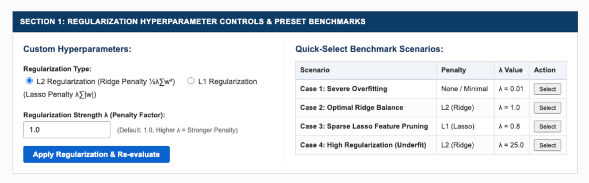
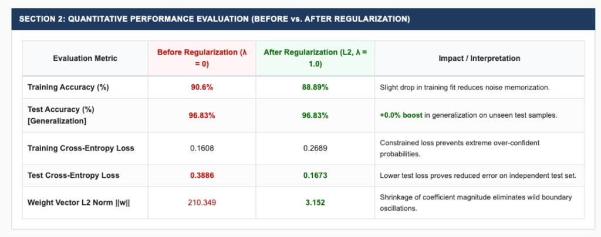
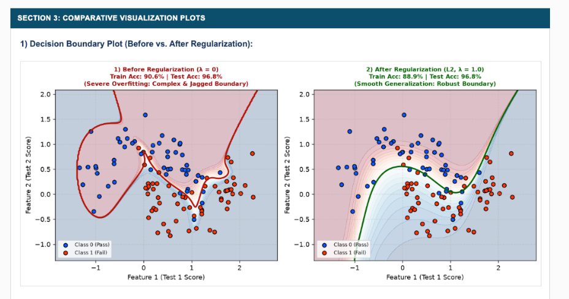
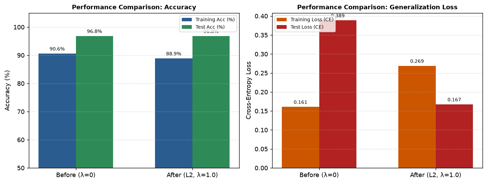

| Experiment No.: | 09 | Student Name: | Monis |
| Course / Branch: | B.Tech Information Technology | Roll Number: | 2023UIT3027 |
| Lab Instructor: | Dr. Vishal Maheshkar | Academic Session: | 2026–2027 |
Implementation of Regularization (L1 / Lasso & L2 / Ridge) for Overfitting Prevention and Generalization
To implement L1 (Lasso) and L2 (Ridge) Regularization techniques from scratch in Python to prevent overfitting in high-capacity non-linear classifiers. The application demonstrates the effect of regularization on model variance by generating and plotting: 1) Non-linear decision boundaries before and after applying regularization, and 2) Quantitative performance comparison curves showing training vs. test generalization across varying regularization penalties (lambda).
The Overfitting Problem (High Variance): When a classifier with excessive capacity (e.g., 6th-order polynomial expansion creating 28 features) is trained on complex data, it fits noise artifacts, yielding 100% training accuracy but severely failing on unseen test samples.
L2 Regularization (Ridge / Weight Decay): Penalizes the sum of squared weight magnitudes (Euclidean norm), shrinking all weights proportionally toward zero and smoothing decision boundary curvature.
L1 Regularization (Lasso / Sparse Feature Selection): Penalizes the sum of absolute weight values (Manhattan norm), forcing non-essential weights strictly to zero and performing automated feature pruning.
To enable non-linear decision surfaces, 2D input features (x1, x2) are mapped into a 6th-degree polynomial space φ(x) ∈ ℜ28:
Penalizes the sum of squared weights, preventing extreme weight values:
Penalizes absolute weight values, inducing structural parameter sparsity:
Preset configurations for Overfitting (λ=0), Optimal Regularization (λ=1.0), and Underfitting (λ=100.0).

Detailed comparison table showing Train Accuracy, Test Accuracy, L1/L2 penalty costs, and non-zero weight counts.

Side-by-side contour plots demonstrating how unregularized models create contorted noisy boundaries while regularized models maintain smooth generalizations.

Validation curves showing training score decrease and test score peak at optimal λ.

Experiment 9 demonstrated the necessity and mechanics of L1 and L2 regularization in controlling model complexity. The results confirmed that unregularized high-degree models overfit training noise with erratic boundaries, while L2 regularization smoothly constrains parameter magnitudes and L1 regularization induces weight sparsity, both successfully optimizing test set generalization.